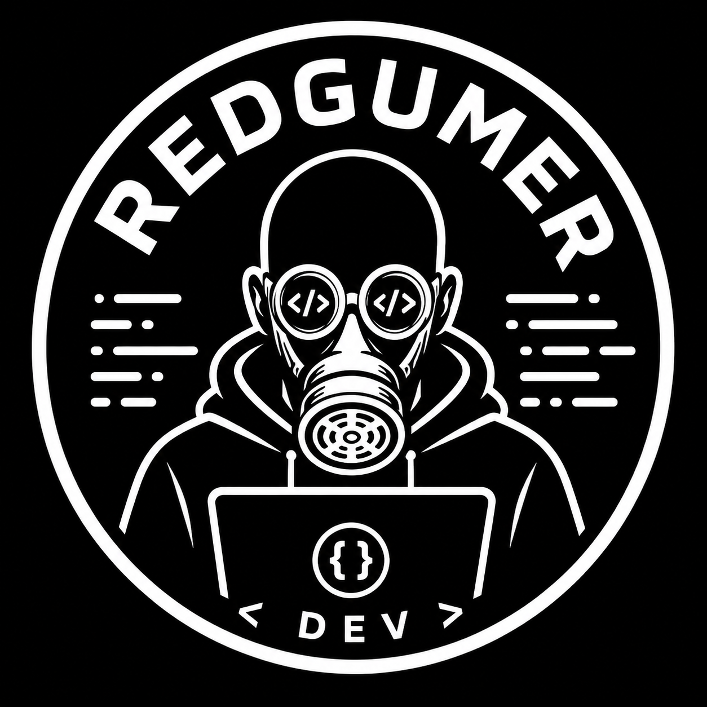
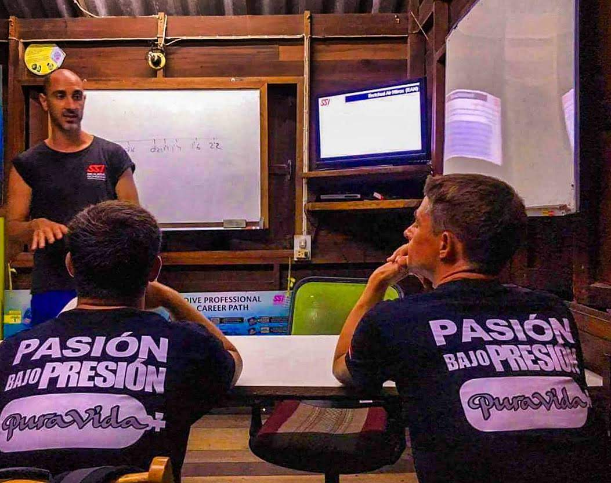
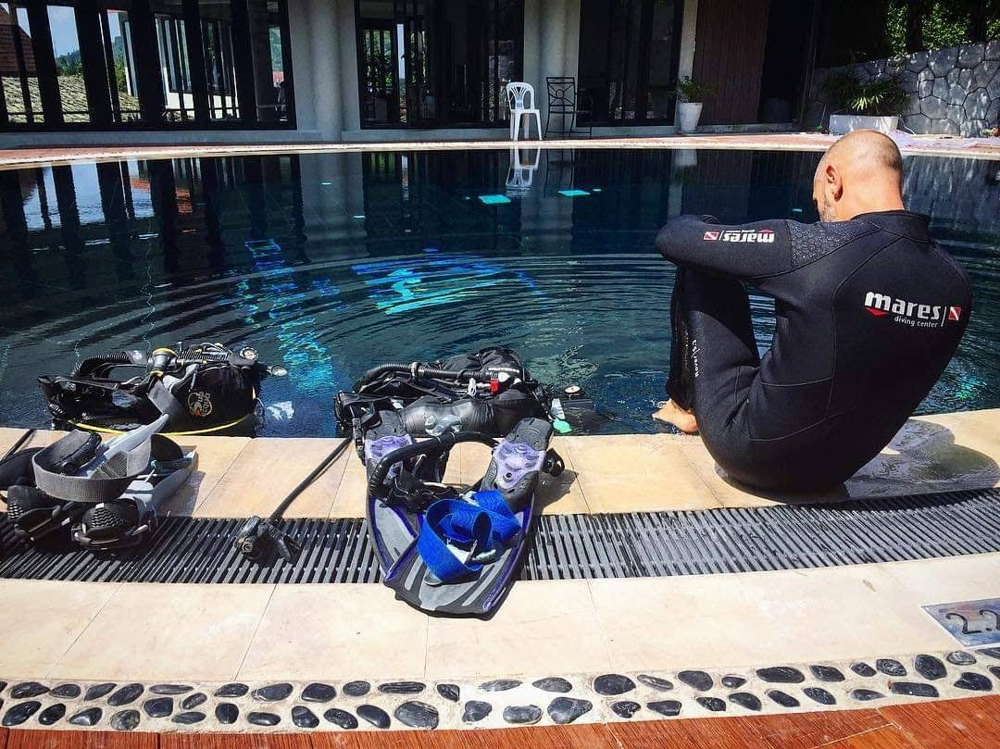
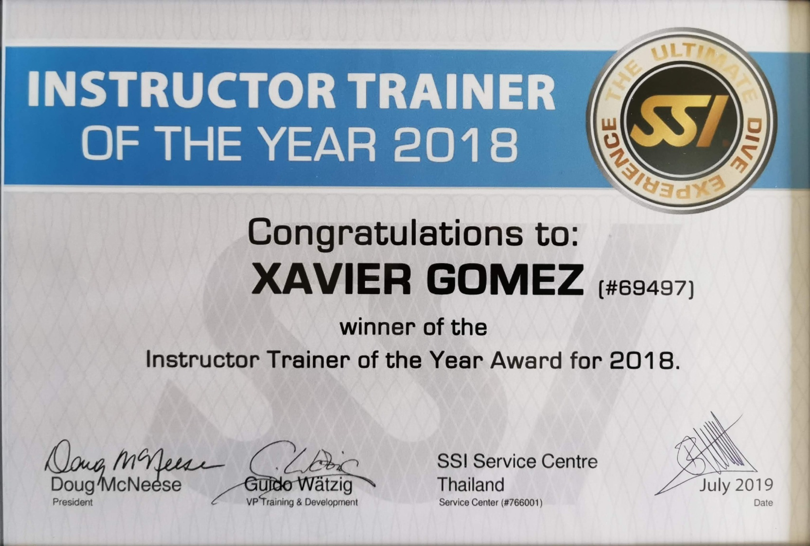

1981
Cambrils
Curiosidad por la informática, el diseño y los videojuegos.

De la tecnología al buceo profesional y de vuelta al código. Hoy estudio Ingeniería Informática en la URV y desarrollo proyectos digitales propios.
Siempre he estado cerca de la tecnología, aunque mi camino hasta la Ingeniería Informática ha pasado por muchos lugares antes de volver al código.
Nací en Cambrils en 1981. Empecé entre diseño, redes y hardware, levanté una pequeña empresa tecnológica y más tarde cambié de escenario por completo. Viví siete años en Tailandia, donde convertí el buceo en mi profesión y llegué a formar a otros instructores. Una lesión de espalda cerró aquella etapa y abrió otra: hoy sigo estudiando, programando y construyendo proyectos propios.
Curiosidad por la informática, el diseño y los videojuegos.
Diseño, redes, hardware y una primera experiencia creando y gestionando una empresa propia.
El buceo pasó de afición a profesión y se convirtió en una etapa decisiva.
Ocho años formando profesionales. Instructor Trainer of the Year en 2017 y 2018.
De vuelta a la tecnología: estudio en la URV y desarrollo nuevos proyectos digitales.
El buceo empezó como una forma de aprender algo nuevo y acabó convirtiéndose en una carrera profesional.
En septiembre de 2016 alcancé el nivel de SSI Instructor Trainer. Durante los años siguientes pasé a formar a instructores para que ellos pudieran enseñar a otros. Ese recorrido recibió el reconocimiento de SSI con el premio Instructor Trainer of the Year dos años consecutivos, en 2017 y 2018.
Una etapa personal y profesional que marcó gran parte de mi trayectoria.
Formación de profesionales e instructores dentro del sistema SSI.
Reconocimiento de SSI recibido durante dos años consecutivos.
Una lesión de espalda terminó cerrando mi etapa profesional en el buceo. Fue el momento de cambiar de dirección y recuperar una parte de mí que siempre había estado ahí: la tecnología.
Formación de instructores, preparación de inmersiones y el reconocimiento de SSI de 2018.



La tecnología no es una etapa nueva: es el hilo que ha ido apareciendo una y otra vez a lo largo de mi vida.
Actualmente curso Ingeniería Informática en la Universitat Rovira i Virgili y dedico buena parte de mi aprendizaje a construir cosas reales. Me interesa transformar problemas concretos en herramientas útiles y seguir ampliando mi forma de desarrollar software.
Este espacio irá creciendo con los proyectos en los que vaya trabajando. Es una fotografía de lo que estoy construyendo ahora.
Aplicación Android orientada a simplificar tareas y consultas del trabajo diario del taxi, con información local, utilidades y experimentación con Android Auto.
Proyecto para explorar puntos de buceo de todo el mundo con información útil y una representación visual del fondo que ayude a entender cada inmersión antes de entrar al agua.
Esta propia web: un espacio personal, portfolio y archivo de trayectoria construido con una arquitectura sencilla, rápida y de coste mínimo.
Prefiero mostrar las áreas en las que estoy trabajando de verdad y actualizarlas conforme avance.
Aplicaciones Android, interfaces móviles, persistencia de datos, geolocalización e integración con Android Auto.
HTML, CSS, JavaScript, control de versiones y despliegues automáticos. Esta web también forma parte del aprendizaje.
Ampliando el entorno de desarrollo hacia macOS e iOS para construir y publicar también dentro del ecosistema Apple.
Para proyectos, tecnología o cualquier propuesta que tenga sentido. El formulario enviará el mensaje de forma privada sin publicar mi dirección de correo.